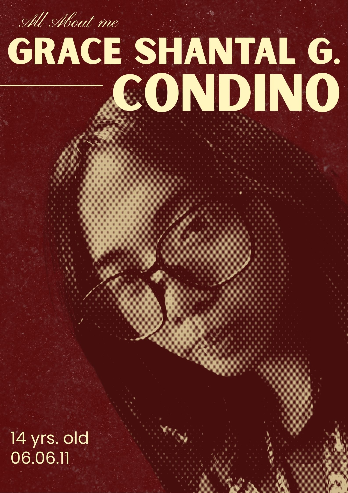
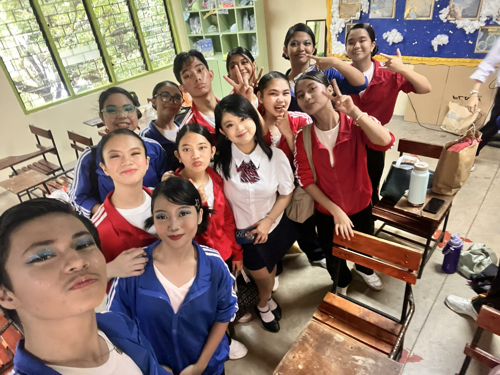
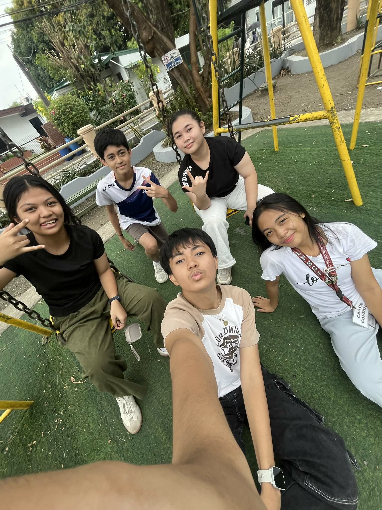
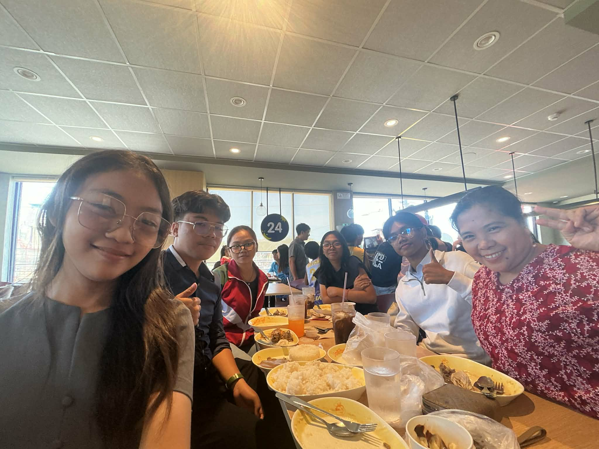

My Personal Space
●○•

•○●
--- Favorites ---
Movies
Right now, I still have a taste for romcom movies. I love how they're so fun and bright with a little drama in the middle that makes it so interesting. As a film lover, I have my top three personal favorite movies that I would watch again and again. Number one would be "10 Things I hate About you", a 2000s movie that still captures my soul every day. My number two movie would be "Flipped", an actual representation of childhood crush and first love. Their story is so cute and I love how realistic it is. It gives off enemies to lovers with a lot of adventure. My top three is "love untangled", a very cute Korean movie that made me feel a lot of mixed emotions. It was really the definition of highschool love and the thought of letting go because you have to. That sums up my taste in movies, I have a long long list but we're not ready for that.
Music
I hope I'm not the only one who absolutely loves listening to music on the way home. I go quiet and start listening to songs while staring at the window, that's my ideal way to spend the day. I don't know if I have a good music taste but I love both pop and also calm songs. My top artists are CAS, and IV of spades. My number one favorite song is "Ma Meillure Ennemie" from Arcane. I love how its french and the beats. My number two is "Kabisado" by IV of Spades, an ideal song to listen especially during the sunset as it reflects the sun's beauty. My number three is "Opera House" by CAS, a very calm solemn music full of emotions especially when you realize its imeaning. At number four is "Earrings" by Malcolm Todd, a very fun and ideal song for feeling your emotions, it's like my crashout song. Lastly, number five is "Take a bite" by Beabadoobee, the beats and the lyrics are everything.
Food
As I'm making this, I'm craving fries. My number one top tier food is french fries, or any type of fries. I love its crunch and it just really completes my whole day. Along with that, I also love pastry especially doughnuts. I love almost all type of bread especially if they have cheese or chocolate. A top tier bread for me is Spanish Bread, I just love its taste. Aside from those snacks, I also love seafood. I wanna say I'm so lucky to not be allergic to shrimps, crabs, or any type of fish. Even if its messy when I eat it, getting a taste of it is so worth it. My eyes would literally light up if I see seafood on our table, proving my true love for it.
Hobbies
moving on to my favorite hobbies, I could say I'm more of an artistic person so when I have free time I'd prefer doing something creative. In my spare time I practice drawing, because its fun and I know that I can make use of it someday, like maybe as gifts or as a side job. Drawing also helps me discover a lot of skills like patience and discipline. Other than that I love watching movies and some tv shows. Right now I have a long list of films that I've been planning on watching this summer. Somehow I learn from the movies I watch, they help me reflect, and realize with the lessons they teach. My favorite hobby would be trying stuff, like trying to play the guitar, sing, basically anything I find interesting. Obviously that way I hone my skills and experience hidden talents.
Circle of Friends
●○•


•○●
Until now, our friendship is still strong, new people were also added and we're all glad about it. It's so fun to always have their back no matter the circumstance. If you decide to go absent, they''ll back you up! (I'm joking). We've spend most of our time together because we're classmates and because we love each other's company. When there are school events, the question "will you come?" never gets old because we always go together. It's crazy how we're all not capable of being alone that's why we need companions. Me personally, I'm very grateful for them. Every moment I share with them is worth it. They even went to our church gathering when I invited them! This circle is so fun and so playful, just the one I've wished for. This coming summer, I'm gonna miss them, I hope they're still my classmates because I don't think I see myself with a different circle. I love how we can all hang out and even when we do nothing, it's still fun. I hope I grow old with these guys.
Family

There are 5 of us in our family, but only 4 people inside our home. My brother is currently at his dorm in Laguna due to college that's why it's more empty in our house now. He still comes home from time to time and I appreciate that. Whenever we're complete, we eat outside which really captures a special moment. Next year, there will only be 3 of us in our home when my sister goes to college. Right now I'm cherishing all our moments together because I know it won't last long. TIme really flies by fast. Meanwhile my dad is getting old, he lowkey starts becoming very forgetful that's why I help him the best I can. He still works very hard alongside my mom. Our house is full of adventure, you never know what will happen next. Sometimes we get serious but honestly most of the time the house is full of laughter. In the picture on the left, my dad wasn't there but there are 6 of us right? Because my friend, Benj Antolin, and my brother's girlfriend, Junewil Octavio, are there. We consider them as a part of our family. My parents always ask about them, how they are doing, and what's happening with their life. Needless to say we are a very inclusive family, and we help while we can. I'm grateful.